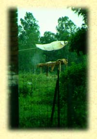

Etymological roots are indicated by the sign ç.
Language groups are as follows: SKT: Sanscrt; E: Egyptian; HB: Hebrew; GK:
Greek; L: Latin; AS: Anglo Saxon; ME: Middle English; OHG: Old High
German; G: German; OFR: Old French; FR: French; IT: Italian; ICL:
Icelandic; N: Nordic; SW: Swedish.
 City - L: ciuitas = community, the quality of citizenship; ciuis = citizen (civil, civilian, civic, civilisation, citadel - IT: citadella = small town); related to GK: heiwa = house. Cf. cite = to summon, quote - from L: citatus = cause to move, excite, summon; ciere = rouse, excite; GK: kio = I go, kinomai = I hasten (excite, recite, incite); see ÖSTHA, sit, stand, settle, etc. HB: hiyr/har, hayar = (a place guarded by) a waking or watch, an encampment, a post; hiyruw = citizen - as one who watches; hiyriy = urbane; hiyram = city-wise; all from huwr = to open, wake, raise-up, stir; to be bare, naked; skin, hide, leather.